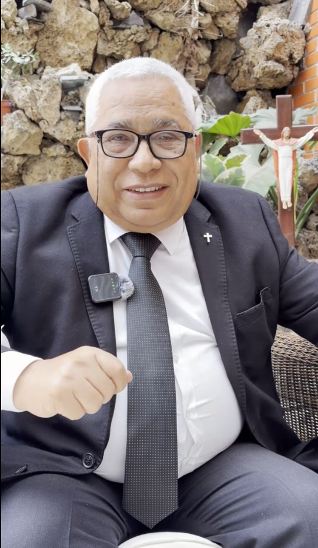

QUIÉNES SOMOS
Una iniciativa familiar
Mundo Católico nace como una iniciativa de evangelización digital dirigida por Raúl Ramírez Ramírez.
Es una iniciativa familiar nacida con un propósito sencillo y fuerte: acercarnos a la fe con fuentes confiables, claras y católicas.
Esta página busca reunir contenido fiel al Magisterio de la Iglesia, accesible para todos y adaptado a los tiempos actuales.

Raúl Ramírez Ramírez
Inspiración familiar de esta misión evangelizadora